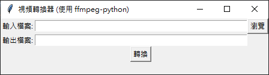

使用 Python 和 FFmpeg 打造簡易視頻轉換器
今天我要跟各位分享一個有趣的小專案 - 使用 Python 和 FFmpeg 製作的簡易視頻轉換器。這個應用程式不僅實用，還能讓我們學習到如何結合 Python 的圖形使用者介面（GUI）與強大的視頻處理工具。
專案概述

這個視頻轉換器具有以下特點：
- 簡潔的圖形使用者介面
- 可以選擇輸入檔案和指定輸出檔案
- 使用 FFmpeg 進行視頻轉換
- 顯示轉換狀態和錯誤訊息
使用的技術
- Python：程式的主要語言
- tkinter：Python 的標準 GUI 函式庫
- ffmpeg-python：FFmpeg 的 Python 綁定，用於視頻處理
# 導入必要的模組
import ffmpeg # 用於處理視頻轉換
import tkinter as tk # 用於創建圖形使用者介面 (GUI)
from tkinter import filedialog, messagebox # 用於檔案選擇和顯示訊息框
# 定義選擇檔案的函數
def select_file():
# 開啟檔案選擇對話框
filename = filedialog.askopenfilename()
# 清除輸入框的現有內容
input_entry.delete(0, tk.END)
# 將選擇的檔案路徑插入輸入框
input_entry.insert(0, filename)
# 定義視頻轉換的函數
def convert_video():
# 獲取輸入和輸出檔案路徑
input_file = input_entry.get()
output_file = output_entry.get()
try:
# 讀取輸入檔案
stream = ffmpeg.input(input_file)
# 設置輸出參數（這裡使用預設參數）
stream = ffmpeg.output(stream, output_file)
# 執行 FFmpeg 指令
ffmpeg.run(stream)
# 更新狀態標籤，顯示成功訊息
status_label.config(text="轉換成功!")
except ffmpeg.Error as e:
# 如果發生錯誤，更新狀態標籤顯示錯誤訊息
status_label.config(text="轉換失敗。錯誤: " + str(e))
# 創建主視窗
root = tk.Tk()
root.title("視頻轉換器 (使用 ffmpeg-python)")
# 創建和放置控制項
# 輸入檔案部分
tk.Label(root, text="輸入檔案:").grid(row=0, column=0, sticky="e")
input_entry = tk.Entry(root, width=50)
input_entry.grid(row=0, column=1)
tk.Button(root, text="瀏覽", command=select_file).grid(row=0, column=2)
# 輸出檔案部分
tk.Label(root, text="輸出檔案:").grid(row=1, column=0, sticky="e")
output_entry = tk.Entry(root, width=50)
output_entry.grid(row=1, column=1)
# 轉換按鈕
convert_button = tk.Button(root, text="轉換", command=convert_video)
convert_button.grid(row=2, column=1)
# 狀態標籤
status_label = tk.Label(root, text="")
status_label.grid(row=3, column=1)
# 啟動主循環
root.mainloop()程式碼解析
讓我們來看看這個應用程式的主要組成部分：
- 導入必要模組：
我們導入了 ffmpeg、tkinter 以及 filedialog 和 messagebox。這些模組分別用於視頻處理、創建 GUI 和處理檔案選擇。 - 檔案選擇功能：
select_file() 函數使用 filedialog.askopenfilename() 來開啟檔案選擇對話框，讓使用者可以輕鬆選擇要轉換的視頻檔案。 - 視頻轉換功能：
convert_video() 函數是這個應用程式的核心。它使用 ffmpeg-python 來讀取輸入檔案、設定輸出參數並執行轉換。如果轉換成功，會顯示成功訊息；如果失敗，則顯示錯誤訊息。 - 創建 GUI：
我們使用 tkinter 創建了一個簡單的視窗，包含輸入檔案和輸出檔案的輸入框、瀏覽按鈕、轉換按鈕和狀態標籤。
如何使用
- 啟動應用程式後，你會看到一個簡單的視窗。
- 點擊「瀏覽」按鈕選擇要轉換的視頻檔案。
- 在「輸出檔案」欄位中輸入想要的輸出檔案名稱（記得加上副檔名）。
- 點擊「轉換」按鈕開始轉換過程。
- 轉換完成後，狀態標籤會顯示成功或失敗的訊息。
注意事項
請確保你的系統上已安裝 FFmpeg。
這個程式使用了 FFmpeg 的預設參數進行轉換。如果你需要更多自訂選項，可以修改 convert_video() 函數中的 ffmpeg.output() 部分。
結語
這個簡單的視頻轉換器展示了如何將強大的命令列工具（FFmpeg）與用戶友善的圖形介面結合。雖然這只是一個基礎版本，但你可以根據自己的需求進行擴展，例如增加更多的轉換選項、支援批次處理等。